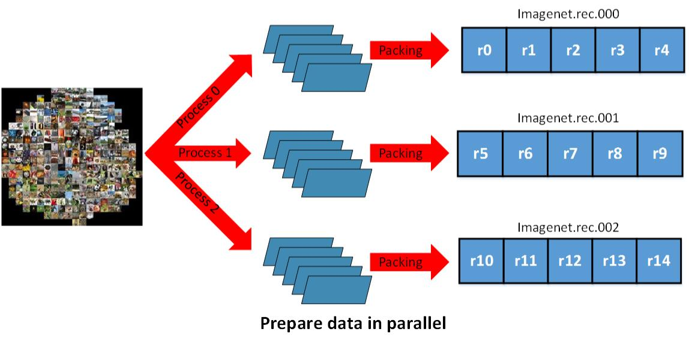
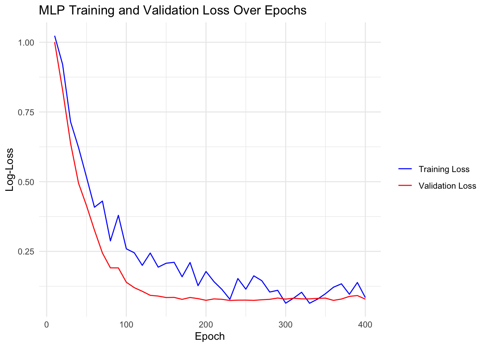

library(mlr3torch)
cuda_is_available()[1] FALSEMethods for increasing training efficiency can be roughtly split up into:
Using a GPU is crucial when training relatively large neural networks because GPUs are specifically designed to handle the parallel processing required for complex computations. To use a GPU in mlr3torch, we can set the device parameter to "cuda". By default, it is set to "auto", which will use a GPU if it is available but which will otherwise fall back to the CPU.
To check if a GPU is available, we can use the torch::cuda_is_available() function.
library(mlr3torch)
cuda_is_available()[1] FALSEIf you have an M1, M2 or M3 Mac, you can also use the available graphics card by setting the device parameter to "mps". You can check this by running:
backends_mps_is_available()[1] TRUETo demonstrate this, we train a ResNet-18 model, which is a relatively common model for image classification tasks – for 10 batches of size 16 on a GPU and a CPU:
The CIFAR-10 dataset is a dataset of 60,000 32x32 color images in 10 classes, with 6,000 images per class.
tsk_cifar = tsk("cifar10")$filter(seq_len(steps * batch_size))
tsk_cifarbatch_size = 16
steps = 10
tsk_
learner = lrn("classif.mlp", device = "cuda")
learner$train(task)Currently in the R version of torch, some care must be taken in order to get a good performance. Specifically, one should:
TODO: Insert code when all is merged in mlverse/torch
Parallelizing data loading is crucial in deep learning workflows, especially when training large models. While the model is performing a forward and backward pass (the network step), the CPU can be busy loading the next batch of data. If data loading is done sequentially, it can become a bottleneck, leading to idle GPU time and inefficient training. By parallelizing data loading, we ensure that the GPU is continuously fed with data, maximizing its utilization and speeding up the overall training process.

In mlr3torch, activating parallel data loading is as easy as setting the num_workers parameter to a value greater than 0.
learner$param_set$set_values(
num_workers = 8L
)The number of workers should be lower than the number of available cores.
As we have already seen in one of the previous notebooks, in deep learning one often some part of the data for validation purposes, which allows to monitor the performance of the model on unseen data. When using mlr3torch, we can track the performance of the model on a validation set by specifying:
validate, which is the ratio of the data that is used for validationmeasures_valid, which is a list of measures to use for validationeval_freq, which is the frequency at which the validation is performedcallbacks, which is a list of callbacks to use during training, in this case we use the history callback, which records the performance of the model on the validation set at regular intervals, enabling us to monitor and analyze the model’s performance over time.While mlr3torch comes with predefined callbacks, it is also possible to define custom callbacks.
library(mlr3torch)
mlr3torch_callbacks<DictionaryMlr3torchCallbacks> with 5 stored values
Keys: checkpoint, history, progress, tb, unfreezetask = tsk("iris")
mlp_learner = lrn("classif.mlp",
neurons = c(50, 50), batch_size = 256, epochs = 400,
optimizer = t_opt("adam", lr = 0.003),
callbacks = t_clbk("history"),
validate = 0.3,
measures_valid = msr("classif.logloss"),
measures_train = msr("classif.logloss"),
eval_freq = 10,
predict_type = "prob"
)
mlp_learner$train(task)
history = mlp_learner$model$callbacks$history
str(history)List of 2
$ train:Classes 'data.table' and 'data.frame': 40 obs. of 2 variables:
..$ epoch : num [1:40] 10 20 30 40 50 60 70 80 90 100 ...
..$ classif.logloss: num [1:40] 1.023 0.921 0.715 0.622 0.516 ...
..- attr(*, ".internal.selfref")=<externalptr>
$ valid:Classes 'data.table' and 'data.frame': 40 obs. of 2 variables:
..$ epoch : num [1:40] 10 20 30 40 50 60 70 80 90 100 ...
..$ classif.logloss: num [1:40] 1.001 0.829 0.638 0.494 0.414 ...
..- attr(*, ".internal.selfref")=<externalptr> head(history$valid) epoch classif.logloss
<num> <num>
1: 10 1.0005382
2: 20 0.8285406
3: 30 0.6377416
4: 40 0.4944752
5: 50 0.4139911
6: 60 0.3260120We can plot the training and validation loss over epochs:

Early stopping is a regularization technique used to prevent overfitting during the training of machine learning models, particularly neural networks. It involves monitoring the validation loss during training and stopping the training process when the validation loss begins to increase, indicating that the model is starting to overfit the training data.
The key parameter for early stopping is patience, which defines the number of epochs to wait after the last improvement in validation loss before stopping the training. For example, if patience is set to 10, the training will continue for 10 additional epochs after the last observed improvement in validation loss. If no improvement is seen during this period, training will be halted.
Advantages of early stopping include:
Now, let’s train the learner again using early stopping with a patience of 10 epochs:
mlp_learner$param_set$set_values(
patience = 5
)
mlp_learner$train(task)
mlp_learner$internal_tuned_values$epochs[1] 250Batch Normalization is an important technique in deep learning that contributed significantly to speeding up the training process.
Batch Normalization: The formula for batch normalization is given by:
\[ \hat{x} = \frac{x - \mu_B}{\sqrt{\sigma_B^2 + \epsilon}} \]
where: - \(\hat{x}\) is the normalized output, - \(x\) is the input, - \(\mu_B\) is the mean of the batch, - \(\sigma_B^2\) is the variance of the batch, - \(\epsilon\) is a small constant added for numerical stability.
To illustrate its effectiveness, we will define a simple CNN, with and without batch normalization, train it on MNIST and compare their performance.
To build the neural networks, we will use mlr3torch, which allows to build architectures from PipeOps. This makes the creation of network architectures easier, as we e.g. don’t have to specify auxiliary parameters. Note that the po("torch_ingress_ltnsr") is a special PipeOp that that marks the input of the neural network.
cnn_with_bn =po("torch_ingress_ltnsr") %>>%
po("nn_conv2d", out_channels = 32, kernel_size = 3, stride = 1, padding = 1) %>>%
po("nn_batch_norm2d", num_features = 32) %>>%
po("nn_relu") %>>%
po("nn_max_pool2d", kernel_size = 2, stride = 2) %>>%
po("nn_conv2d", out_channels = 64, kernel_size = 3, stride = 1, padding = 1) %>>%
po("nn_batch_norm2d", num_features = 64) %>>%
po("nn_relu") %>>%
po("nn_max_pool2d", kernel_size = 2, stride = 2) %>>%
cnn_without_bn = po("torch_ingress_ltnsr") %>>%
po("nn_conv2d", out_channels = 32, kernel_size = 3, stride = 1, padding = 1) %>>%
po("nn_relu") %>>%
po("nn_max_pool2d", kernel_size = 2, stride = 2) %>>%
po("nn_conv2d", out_channels = 64, kernel_size = 3, stride = 1, padding = 1) %>>%
po("nn_relu") %>>%
po("nn_max_pool2d", kernel_size = 2, stride = 2) %>>%
head = po("nn_flatten") %>>%
po("nn_linear", out_features = 128) %>>%
po("nn_relu") %>>%
po("nn_linear", out_features = 10)
model = po("torch_optimizer", optimizer = t_opt("adam", lr = 0.003)) %>>%
po("torch_model_classif",
epochs = 100,
batch_size = 256,
validate = 0.3,
measures_valid = msr("classif.logloss"),
predict_type = "prob",
device = "cuda",
callbacks = t_clbk("history")
)The MNIST dataset is a well-known benchmark in the field of machine learning and computer vision. It consists of 70,000 images of handwritten digits (0-9), each of size 28x28 pixels. The dataset is divided into 60,000 training images and 10,000 test images. The goal is to classify these images into their corresponding digit labels. MNIST is widely used for training various image processing systems and serves as a standard dataset for evaluating the performance of machine learning algorithms.
Now we define the learners and the predefined MNIST task:
lrn_with_bn = cnn_with_bn %>>% head %>>% model
lrn_without_bn = cnn_without_bn %>>% head %>>% model
design = benchmark_grid(
task = tsk("mnist"),
learner = list(lrn_with_bn, lrn_without_bn),
resampling = rsmp("insample"),
)bmr = benchmark(design, store_models = TRUE)Transfer learning is a powerful technique in machine learning where a pre-trained model developed for a specific task is reused as the starting point for a model on a second, related task. Instead of training a model from scratch, which can be time-consuming and computationally expensive, transfer learning leverages the knowledge gained from a previously learned task to improve learning efficiency and performance on a new task.
Using mlr3torch, we can use transfer learning and use a ResNet-18 model pretrained on ImageNet as a starting point for the CIFAR-10 classification task.
resnet = lrn("classif.resnet18",
pretrained = TRUE,
epochs = 2,
batch_size = 256,
validate = 0.3,
measures_valid = msr("classif.logloss"),
device = "cuda",
predict_type = "prob",
id = "pretrained"
)
resnet_no_pretrain = resnet$clone(deep = TRUE)
resnet_no_pretrain$param_set$set_values(
pretrained = FALSE
)
resnet_no_pretrain$id = "not_pretrained"
grid = benchmark_grid(
task = tsk("cifar10"),
learner = list(resnet, resnet_no_pretrain),
resampling = rsmp("insample")
)
bmr = benchmark(grid, store_models = TRUE)
bmr$aggregate()We can see, that the model with the pretrained ResNet-18 model performs better than the model without pretraining.
Data augmentation is a technique used to increase the diversity and quantity of training data without actually collecting new data. By applying various transformations to the existing dataset, data augmentation helps improve the generalization capabilities of machine learning models, reduce overfitting, and enhance model robustness. This is especially crucial in fields like computer vision, where obtaining large labeled datasets can be challenging and expensive.
Data augmentation for images can consist of rotation, translating, grey scaling, mixup etc. In mlr3torch, this is possible by preprocessing the data using augmentation functions from the torchvision package. The corresponding PipeOps start with `po(“tor”)